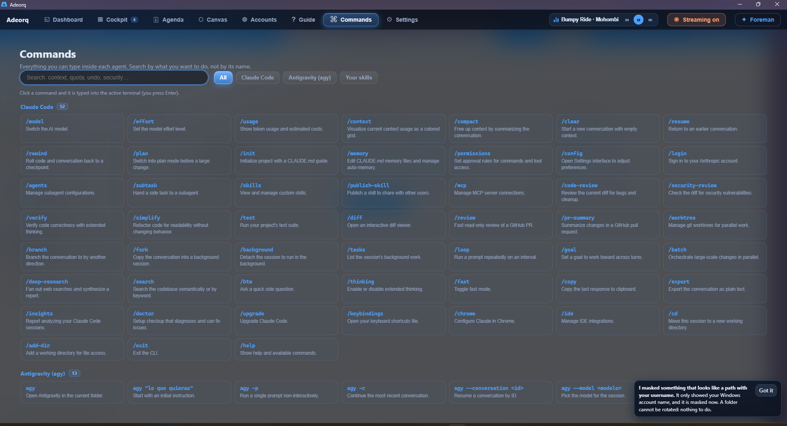

01
Terminales de verdad, no una imitación
Dentro de cada panel corre el mismo motor de consola que usa Windows. Los colores, el redibujado, Ctrl+C, el historial y cualquier herramienta que espere una terminal funcionan tal cual. El dibujado va por GPU, así que miles de líneas no atragantan la ventana.
- PowerShell, CMD o el shell que uses, con tu PATH y tu perfil
- El terminal se redimensiona de verdad, sin líneas partidas
- Copiar, pegar y arrastrar una imagen para dársela al agente
